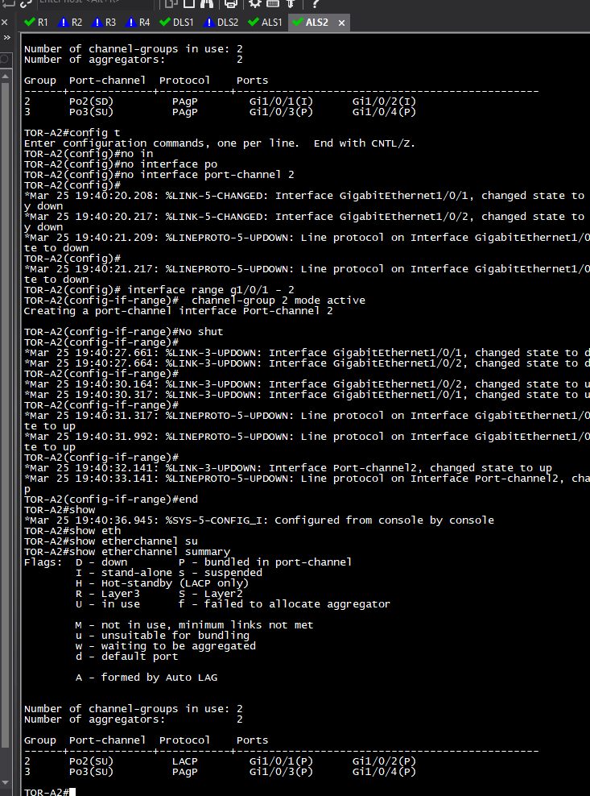
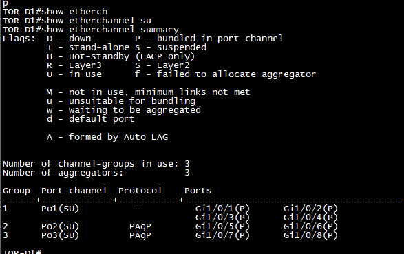
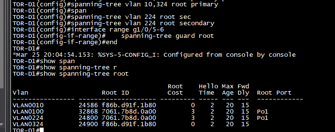

Objective
Build a resilient Layer 2 lab topology and confirm that aggregated links and spanning-tree roles behave as intended. The focus was configuration literacy and verification through Cisco IOS command output.
Implementation
- Configured port-channel interfaces between switches using the selected EtherChannel negotiation protocol.
- Used interface-range configuration to place the relevant switch ports into their channel groups.
- Applied spanning-tree root primary and root secondary roles for the required VLANs.
- Confirmed the final state using EtherChannel summary and spanning-tree root commands.
Validation
| Check | What it confirms |
|---|---|
| EtherChannel summary | Member interfaces are bundled into the intended port-channel. |
| Protocol status | The configured LACP or PAgP negotiation method is active for the lab link. |
| Spanning-tree root output | Root bridge selection is consistent with the VLAN role configuration. |
| Link-state output | Interfaces and the logical port-channel transition to the expected operational state. |
Configuration evidence



Learning
- Logical redundancy depends on both correct link aggregation and deliberate loop prevention.
- Verification commands are essential: a successful configuration command alone does not prove the intended operational state.
- Root-bridge placement is a design decision that should align with the topology, not an afterthought.
Technology stack
- Cisco IOS
- EtherChannel
- LACP
- PAgP
- Spanning Tree Protocol
- VLANs